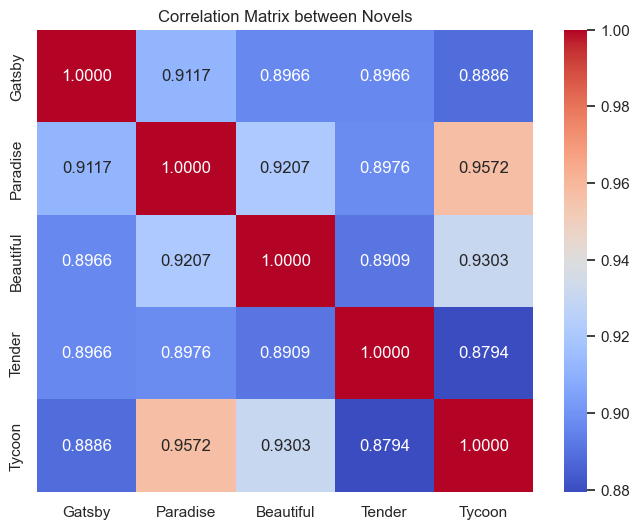

Welcome to my webpage about my final project for ESH6087 - Criticism and Code 2023/24 at QMUL. The project works in two parts: firstly, it uses wordcount in python to compare F. Scott. Fitzgerald's writing style in five of his most notable novels. Secondly, the project looks at three different authors; namely at F. Scott Fitzgerald, William Shakespeare and Daniel Defoe in order to compare the frequencies of word usage in their individual writing styles with each other. I have divided this page into a IDEA, EXECUTION, and RESULTS area to ease the reading flow and help better understand the aims, the challenges and the outcomes of my project. Happy reading!
When I thought about ideas for my project, I knew I wanted to do something with data analysis tools in python, as I was eager to put my newly acquired coding skills to use. I also wanted to visualize some aspect of a text with a graph as well as compare these findings to other authors and their texts. And as I kept thinking about these elements, I concluded that what I wanted to do was analyse the writing style between authors to identify a text based on a numerical value or at least in comparison to other texts’ values. I decided that word frequency was probably a good way to start getting into the texts and started with F. Scott Fitzgerald’s five most notable novels: Great Gatsby, This Side of Paradise, The Last Tycoon, The Beautiful And The Damned, and Tender Is the Night. Even though I realised later that word frequency alone is probably not the best indicator to differentiate between authors, I still gave it a go just to see what I would find.
Part I:
Before I talk about the details of the code and the implementation, I want to raise a few issues I encountered at the beginning of my project. Firstly, the issue with word-frequency is that depending on a novel’s page length, the values of word frequency vary greatly so it becomes difficult to compare. This is why I decided to rank my word lists and to create the visualisations based on the values of the word ranks and not their frequency per se. Secondly, I had issues with the stopwords list. At first, and out of habit (because this is a common practice for text analysis projects), I grabbed a stopword list from one of our weekly sessions where we used a similar tool and added it to my code. But when I read through the words inside the list, I realised that there were a lot of words that I would find interesting if I saw them come up in my list of most frequently used words. Examples include verbforms like ‘have’ and (or in contrast to) ‘be’, or personal pronouns like ‘he’, ‘she’ or ‘they’. I found that there was a lot that could be said about an author if (one of) these words was used much more frequently in comparison to others in their work. So, as I kept removing words from this stopwords list, I quickly concluded that including a stopwords list was going to be detrimental to my analysis if my goal was to look at the writing style of an author through the amount of times they use specific words. This is why you will not find a stopwords list in my code.
The first part of the code sets up a word counter and describes the file paths of the two texts I wanted to look at. As I went through my list of five novels, I kept replacing these file paths with the ones for the other novels so that I could go through every binary possibility for the calculations, and later the visualisations. The first list called meaningful_words_df contains the 20 most frequently used words in both novels taken together. Next, I produced the list of the first 15 elements in the wordcount for each individual novel, which the elements df1.head(15) and df2.head(15) represent. As I mentioned above, wordcount alone is not a suitable value as it hides the crucial factor of page length for example. This is why the next step ranks the most used words in a list, again firstly for df1 and then for df2 and the visualisations also use the rankings instead of the actual number of words found in each text. This is where I first asked ChatGPT for help: I asked the AI interface how I could visualize these findings in a plot. It replied that I would first need to combine the two dataframes to visualize the combined data in a scatter plot, so that’s what I did with merged_df=pd.merge(df1, df2, on=’term’, how=’outer’, suffixes=(‘_df1’, ‘_df2’)). I then replaced the NaN values with 0 to represent the words that are not present in one of the dataframes. I then learned from ChatGPT that I had to create word frequency vector (and then word ranking vectors), which essentially is just a list of the data that will be used to constitute the placement of each point in the scatter plot. After this was completed, I produced the graph called ‘Ranking Comparison’ and replaced the file paths at the top of the code with all the possible combinations of Fitzgerald’s novels to see their most highly ranked words in this visualisation.
In doing this, I noticed there were always several words that would appear on the graph but only on one axis: I quickly understood that these were words that only appeared in one of the novels and not at all in the other. As I was imagining how I could numerically calculate the similarity between two novels, I realized that I had to remove these words as they would falsify the value of their relation. After a little online search, I learned that these elements are also called ‘outliers’ because they don’t belong to a main corpus of values. So I proceeded to remove these ‘outliers’ by including the crucial element of !=0 behind merged_df for both dataframes. This explains the next graph with the red dots and why it doesn’t contain those outliers anymore.
Next, I knew I had to calculate some kind of numerical relation between the rankings of each novel – something like a similarity score. Because I didn’t know what function to use in python to calculate something like that, I asked ChatGPT and it gave me the option to calculate the correlation coefficient np.corrcoef from NumPy. Next, ChatGPT advised me to make a correlation matrix – I learned that a correlation matrix is a table that contains correlation coefficients between variables. The coefficient ranges from -1 to 1 where -1 indicates a perfect negative correlation, 0 indicates no correlation and 1 indicates a perfect positive correlation. For my examples, this meant that the closer this number for either pair of novels was to 1, the higher correlation existed between the rankings of their most frequently used words. This is the list of correlation values that I used to fill in my correlation matrix, where I only used the 4 first numbers after the comma for the purpose of ease of reading:
Great Gatsby and Tender is the Night: 0.8886205337597816 This Side of Paradise and The Last Tycoon: 0.9116729608935584 The Beautiful and the Damned and Great Gatsby: 0.8908950783842086 Tender is the Night and This Side of Paradise: 0.9207065572935264 The Last Tycoon and The Beautiful and the Damned: 0.8794442733164988 The Last Tycoon and Tender is the Night: 0.8976060711396049 The Beautiful and the Damned and This Side of Paradise: 0.9303328882441039 Great Gatsby and This Side of Paradise: 0.8965582919975044 Great Gatsby and The Last Tycoon: 0.8965760304322227 The Beautiful and the Damned and Tender is the Night: 0.9572308203563318 The instances where the matrix includes the numeric value of 1 indicates the comparison between one and the same book, which are obviously perfectly correlated.
When I first analysed the scatter plot graphs, I compared them to the tables I had produced earlier with the word frequency rankings. And I noticed something strange: the words that in my eyes looked the most ‘highly ranked’ in the graph (in the top-right corner) were non-existent in the list that I had produced. So I proceeded to ask ChatGPT and learned that actually, the highest ranked words were placed in the bottom-left corner, as they had a ranking number closer to 1, thus being at the top of the list, whereas the words placed more towards the right of the graph have a higher ranking score and are therefore lowers on the rank list. Additionally, the diagonal line close to which most words are placed signals a high correlation between the words. Without the outliers, most words lie on this diagonal, which explains the relatively high correlation scores achieved through the correlation=np.corrcoef function.
I then imported seaborn and matplotlib to create my heatmap of the correlation coefficients (from the correlation matrix) between Fitzgerald’s novels.

As for the results from this visualisation, we can say that This Side of Paradise and The Last Tycoon are the most similar in word frequency with a correlation score of 0.9572, even though they were published 21 years apart (respectively in 1920 and in 1941). This is surprising as one would assume that novels written closer together in time would be more similar in the vocabulary used. From the results of my analysis and the most frequent words used in these novels, there is not much to be said about the thematic similarity they might have. After I read their summaries, I was again not convinced that there was an argument to be made about why these books might be similar. In terms of the themes they cover, This Side of Paradise talks about the disillusionment of the young generations after the First World War, whereas The Last Tycoon explores the beginnings of Hollywood film industry through a young star who makes his debut in the film industry. If we look at the most frequent words found in them, we find ‘the’, ‘and’, ‘a’, ‘of’, and ‘to’, which don’t really say much about the books themselves. Now, this is partly because I didn’t include any stopwords in my code. But it probably also just means that the words that come up the most are words that appear in (almost) every sentence – notably articles and conjunctions for example. We might be inclined to say that Fitzgerald is especially descriptive if he uses a lot of articles in his novels and that he explains a lot of things through connecting ideas which the words ‘to’, ‘of’ and ‘and’ might convey. But I think this is a much too broad thing to say and could be said about any author, and so I believe that it is probably just luck that determined the high correlation score between these two novels.
Next in the correlation score rank, we see The Last Tycoon (1941) and The Beautiful and The Damned (1922) which are 19 years apart. These two novels have a correlation coefficient of 0.9303 and there’s only a very small difference to the previous pair in terms of their most frequent words: ‘the’, ‘a’, and ‘and’ are the same at the top of the list, but then, ‘i’, ‘to’ and ‘he’, which were not in the first pair’s list, follow. This might indicate that these two novels focus more on the relationship between a first-person narrator and a male character, whereas personal pronouns were not part of the first pair’s 6 most frequent words.
Lastly, the pair of This Side Of Paradise (1920) and The Beautiful and the Damned (1922) have a correlation score of 0.9207. Their first 6 words in the combined dataframes list are very similar to the list of the first pair with ‘the’, ‘and’, ‘a’, ‘of’, ‘to’, and ‘he’. As we find a mix of conjunctions and articles again, which almost align completely with the first pair’s most frequent words, we can say that these words are most probably the same across most (or all) novels. They are not specifically significant in terms of this author’s writing, especially because when we look at the publication dates, it seems counter-intuitive that two novels published 21 years apart have the same list of most frequent words as two novels that were published only two years apart. This proves that it is hard to make an argument specifically about these novels’ author’s writing style.
Part 2:
Due to the fact that I couldn’t make any ground-breaking or super interesting arguments about Fitzgerald’s writing style in terms of his most frequently used words, I decided to expand my analysis a little bit and compare three different authors from different centuries to compare their use of specific words. I decided on Fitzgerald (because I already had a corpus of his novels), as well as Shakespeare and Daniel Defoe, thus constituting a list of authors respectively from the 20th, 17th and 18th centuries.
Again, I asked ChatGPT how best to do that in python and was given the advice to use the combinations() function from itertools and to create a list of subsets of every binary possibility between these 6 novels. I then calculated the correlation coefficients between them and then proceeded creating another heatmap for these values.
In this visualisation, the most highly correlated texts are (not surprisingly) the novels/plays by the same author. But on further inspection, we can see that Shakespeare’s Othello and Defoe’s Robinson Crusoe have a correlation score of 0.8241, which seems quite high for two texts written by different authors and more than a century apart. This intrigued me and I wanted to see what their most frequent words were, so I replaced the file paths at the top of my code with these two texts and looked at their word ranking graph:
There are two things that are notable in this scatter plot. Firstly, the top ranked words are, again, the same conjunctions and pronouns as with Fitzgerald’s novels, except for the ‘I’ and ‘my’ which differs from the ‘he’. This again confirms the argument that these words tend to be the most frequent ones in many texts, and don’t say anything specific about their authors. Secondly however, if we look at the scatter plot more broadly, we see that the personal pronouns are limited to the first person (‘me’, ‘my’, ‘I’) and the male (‘he’, ‘him’, ‘his’): there are no female pronouns at all in the graph. This seems to suggest that female characters are less important in these texts, and although Desdemona is a crucial character in Othello, it is indeed more the men around her that are driving the action. In Robinson Crusoe, there are indeed no female characters at all in the story which explains the lack of female pronouns.
Lastly then, I wanted to experiment a bit more with the visualisations in python and asked ChatGPT how to code a node-and-edge graph for the correlations between all these texts. I learned that there are different layouts in NetworkX like the Spring or Circular layout. I tried both the spring_layout() and the shell_layout() functions and decided that the Shell looked a little more ordered and was easier to read. Here are both graphs next to each other:
What remains to be said about these is that the thickness of the edges represents the higher correlation score between the two texts, which is why the lowest connecion of 0.54 on the edge between Tender is the Night and Othello is almost not visible because it is so thin.
Through this project, I have learned that word frequency can be interesting in finding similarities between different authors in the words they use, but when it comes to looking at different texts from one author, it is much harder to make a convincing argument about writing style just based off their word frequencies.
More specifically, I was able to make an argument on the similar lack of female pronouns in Othello and Robinson Crusoe which does say something about the lack of importance placed on women in these texts. While women are completely removed from one text, they disappear under the oppressive actions of their male counterparts. My analysis on Fitzgerald specifically however didn’t yield much insightful knowledge at all unfortunately.
Lastly then, I was able to use ChatGPT to help me figure out how to implement certain tools/calculations into my code to realize the full potential of my ideas in this data analysis. And in moments where I was confused or didn’t know why my code wasn’t working, it was useful to ask the AI interface and be able to resolve the issues without any major breakdowns.
2784 words